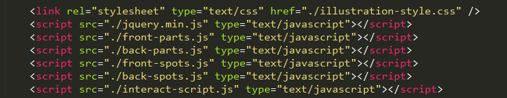
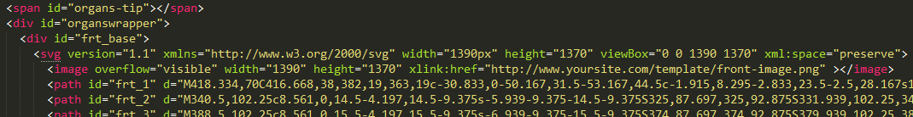
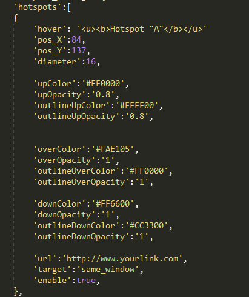

“Interactive Human Anatomy | Male/Female - Front/Back”
Thank you for purchasing our work. If you have any questions that are beyond the scope of this help file, please feel free to contact us. Thanks so much!
Table of Contents
- General overview
- Installation
- How to integrate the diagram into WordPress site?
- Organs Customization
- How to add/remove and modify spots?
- How to get X, Y coordinates?
FAQ
- How to decrease the loading time?
- How to resize the diagram?
- I installed the diagram but I can see a black image and no interaction?
- I installed the diagram but I can't see the model image?
- The hover popup appears away from the mouse?
- I need to make some special customization, are you available for freelance work?
General overview - top
This is an interactive template of human anatomy displaying 2 slides;
1- Front view of male and female.
2- Back view of male and female.
Each slide displays the main external parts of male and female anatomy front and back views. Also it gives you an option to add clickable spots anywhere on the illustration and link it to any web page.
Installation - top
To insert the diagram to your website, please follow these steps:
- Open the "template/index.html" file using any code editor such as Sublime, or Notepad++.
- Copy the code from the head section and paste it before the closing head tag of your page

- Upload all the supporting files ( model images and the CSS file and the JS files plus the jquery file) to your site. If you want to put them in another directory, please make sure that the relative path is correct or use their absolute path "recommended", like this
<script src="http://www.yoursite.com/template/interact-script.js" type="text/javascript"></script>
- Copy the code from the body tag and paste it anywhere you want to insert the diagram in your page

- Make sure to use the full path of the model images to match the location in your website, like this:
<image overflow="visible" width="1390" height="1370" xlink:href="http://www.yoursite.com/template/front-image.png" ></image>
and
<image overflow="visible" width="1390" height="1370" xlink:href="http://www.yoursite.com/template/back-image.png" ></image>
- Save and start the diagram customization.
Important note: With some templates and due to divs arrangement, the floating hover popup may be pushed away from where it should be, to avoid that we recommend that you cut the span organs-tip line of code and paste it just after the opening body tag of the page like this:
<body>
<span id="organs-tip"></span>
How to integrate the diagram into WordPress site - top
|
- Upload the "template" folder to your site using FTP client to the directory "wp-content".
To test it, use the direct link to open the template in your browser. It should be a link like this:
http://www.yoursite.com/wp-content/template/index.html
You can use FileZilla as FTP client, and here is a video tutorial about using it.
- Install the HTML Snippet plugin to create a new snippet for the template.
- Open the included file "template/for-wordpress-only.html" using any code editor such as Sublime, or Notepad++.
- Copy the entire code and paste it in a new snippet but make sure you are using your real site links instead of the default example links in the first few lines of the code and for the model images as well, like this:
<image overflow="visible" width="1390" height="1370" xlink:href="http://www.yoursite.com/wp-content/template/front-image.png" ></image>
and
<image overflow="visible" width="1390" height="1370" xlink:href="http://www.yoursite.com/wp-content/template/back-image.png" ></image>
- Save the new snippet and use the shortcode in any page to display the template.
Important note: With some themes and due to divs arrangement, the floating hover popup may be pushed away from where it should be, to avoid that we recommend that you cut the span organs-tip line of code and paste it just after the opening body tag or in the footer section of the theme like this:
<body>
<span id="organs-tip"></span>
You can access the theme files and find the file that has the opening body tag through your admin panel > "appearance" > "Editor" > in the right side section > find the file that has the opening body tag (usually: header.php) > paste this code <span id="organs-tip"></span> just after the line of the opening body code then press "Update File".
You have also the iframe option. |
Organs Customization? - top
You can customize the colors, links, hover description for each organ independently through the included "back-parts.js" and "front-parts.js" like this:
- 'hover': 'You can use HTML code', //organ hover content
NOTE: The hover popup expands as much as you put content for an organ. but the hover popup is not responsive so don't add too much content.
- 'enable':true,//true/false to enable/disable this organ.
- 'url':'http://www.yourlink.com/', //Goto URL
- 'target':'same_window', //open link in new window:"new_window", open in current window:"same_window", or "None" for nothing.
Trick: Using 'None' is very useful if you have enough content in the hover popup and you don't want to link this organ to other pages).
- 'upColor':'red', //organ color when page loads
- 'upOpacity':'0', // opacity of that color from 0-1 (e.g 0.3, can be 0 to hide it)
- 'outlineUpColor':'#0000FF', //outline color when page loads
- 'outlineUpOpacity':'0.4', // opacity of that color from 0-1 (e.g 0.3, can be 0 to hide it)
- 'overColor':'red', //organ color when mouse hover
- 'overOpacity':'0.3', // opacity of that color from 0-1 (e.g 0.3, can be 0 to hide it)
- 'outlineOverColor':'#0000FF', //outline color when mouse hover
- 'outlineOverOpacity':'1', // opacity of that color from 0-1 (e.g 0.3, can be 0 to hide it)
- 'downColor':'#993366', //organ color when mouse clicking
- 'downOpacity':'0.5', // opacity of that color from 0-1 (e.g 0.3, can be 0 to hide it)
- 'outlineDownColor':'#FFFF00', //outline color when mouse clicking
- 'outlineDownOpacity':'0.8', // opacity of that color from 0-1 (e.g 0.3, can be 0 to hide it)
| |
How to add/remove and modify spots? - top
Using the included "front-spots.js", "back-spots.js" files, for your convenience you can just copy/paste the code of any of the existing spots and change its parameters, You can use this guide to get the X, Y coordinates.
- 'hover':'You can use HTML code', //the content of the hover popup
NOTE: The hover popup expands as much as you put content for a spot. but the hover popup is not responsive so adding too much content may affect mobile users view.
- 'pos_X':'84', //location of the spot on X axis (How?)
- 'pos_Y':'137', //location of the spot on Y axis (How?)
- 'diameter':'16', // diameter of this spot
- 'upColor':'red', //spot color when page loads
- 'upOpacity':'0.8', // opacity of that color from 0-1 (e.g 0.3, can be 0 to hide it)
- 'outlineUpColor':'#FFFF00', //outline color when page loads
- 'outlineUpOpacity':'0.8', // opacity of that color from 0-1 (e.g 0.3, can be 0 to hide it)
- 'overColor':'#FAE105', //spot color when mouse hover
- 'overOpacity':'1', // opacity of that color from 0-1 (e.g 0.3, can be 0 to hide it)
- 'outlineOverColor':'#FF0000', //outline color when mouse hover
- 'outlineOverOpacity':'1', // opacity of that color from 0-1 (e.g 0.3, can be 0 to hide it)
- 'downColor':'#FF6600', //spot color when mouse clicking
- 'downOpacity':'1', // opacity of that color from 0-1 (e.g 0.3, can be 0 to hide it)
- 'outlineDownColor':'#CC3300', //outline color when mouse clicking
- 'outlineDownOpacity':'1', // opacity of that color from 0-1 (e.g 0.3, can be 0 to hide it)
- 'url':'http://www.yourlink.com/', //Goto URL
- 'target':'same_window', //open link in new window:"new_window", open in current window:"same_window", or "None" for nothing.
Trick: Using 'None' is very useful if you have enough content in the hover popup and you don't want to link this organ to other pages).
- 'enable':true,//true/false to enable/disable this organ.
|
 |
How to decrease the loading time? - top
All JS/CSS files are small sized files and you don't need to worry about them, but model image could be large size file because we are using a high quality image with large dimensions and transparent background, you may not need all this in your website, so if your website background is white, then you can save the model image as normal PNG or even JPG to decrease the file size, you may also shrink the model image as much as you need for your website, that will decrease the final file size and the loading time.
How to resize the diagram, and remove any space above the diagram? - top
The diagram has a default size for different screen sizes but if you put it in a small div according to your website design, you may notice an empty area above and below the diagram, to remove this gap simply decrease the height value of the organswrapper svg in the included illustration-style.css file.
Note: A fixed height value in px is required for IE to load the SVG shape in the required size otherwise it will be shrinked to a minimum size, so you can adjust the height value but don't delete it.
I installed the diagram but I can see a black image only and no interaction? - top
Most probably the path of the supporting files (JS files) are not correct, you can use the full path of the supporting file in the html code like this:
<script src="http://www.yoursite.com/template/interact-script.js" type="text/javascript"></script>
I installed the diagram but I can't see the model image? - top
Most probably the path of the image in the html code is not correct, you can use the full path of the model image in the html code like this:
<image overflow="visible" width="1390" height="1370" xlink:href="http://www.yoursite.com/template/front-image.png"
<image overflow="visible" width="1390" height="1370" xlink:href="http://www.yoursite.com/template/back-image.png"
The hover popup appears away from the mouse? - top
With some website templates and due to divs arrangement, the floating hover popup may be pushed away from where it should be, to avoid that we recommend that you cut the span organs-tip line of code and paste it just after the opening body tag of the page like this:
<body>
<span id="organs-tip"></span>
If you are using WordPress, You can access the theme files and find the file that has the opening body tag through your admin panel > "appearance" > "Editor" > in the right side section > find the file that has the opening body tag (usually: header.php) > paste this code
<span id="organs-tip"></span>
just after the line of the opening body code then press "Update File".
I need to make some special customization, are you available for freelance work? - top
Yes, please contact us and we will get in touch with you and discuss the requirements and give you a quote to do it.
That's it :)
Once again, thank you so much for purchasing our work. As we said at the beginning, we will be glad to help you if you have any questions relating to this file. No guarantees, but we will do our best to assist. If you need a special customization, please don't hesitate to contact us.
Thank you
HumanAnatomyIllustration.com Team